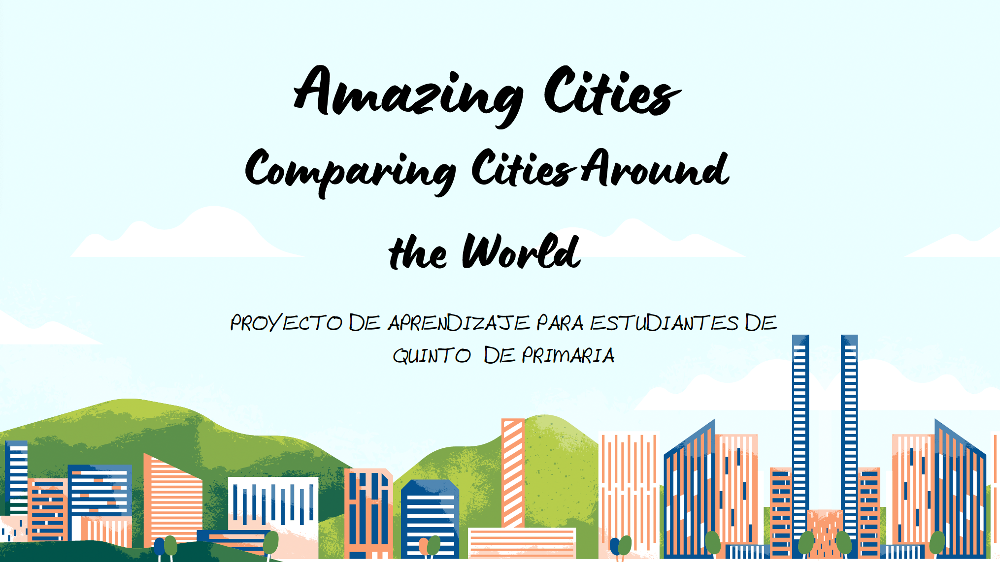

Descripción del proyecto
- 8 o 9 sesiones
- Grupos de 4 ó 5 alumnos.
- Alumnado de 5º de Primaria
Este proyecto, denominado Amazing Cities, está dirigido al alumnado de 5º de Educación Primaria en el área de Lengua Extranjera (Inglés).
El objetivo es que el alumnado investigue sobre diferentes ciudades del mundo y elabore una presentación digital utilizando comparatives y superlatives en inglés.
A través de este proyecto se fomenta el trabajo cooperativo, el uso de herramientas digitales y el desarrollo de la competencia comunicativa.
